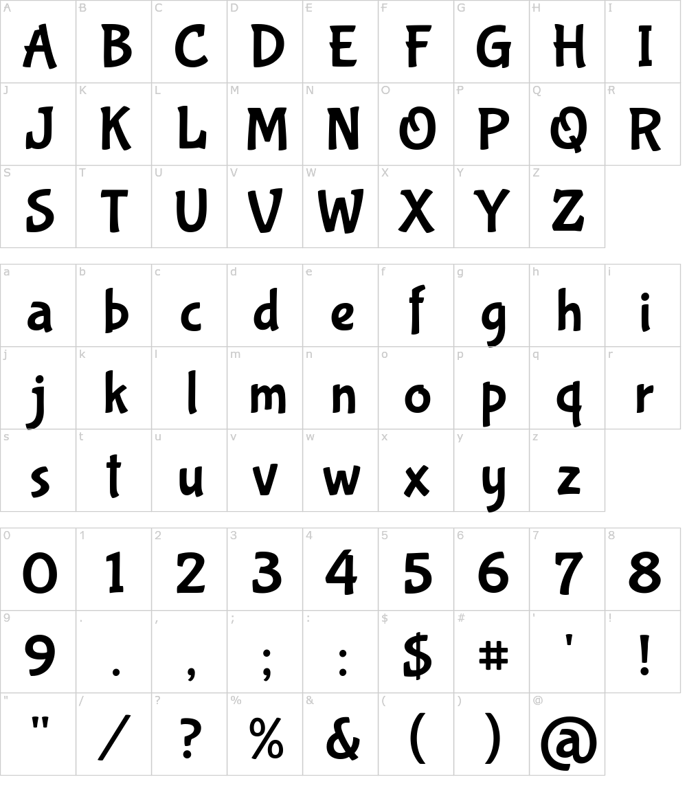
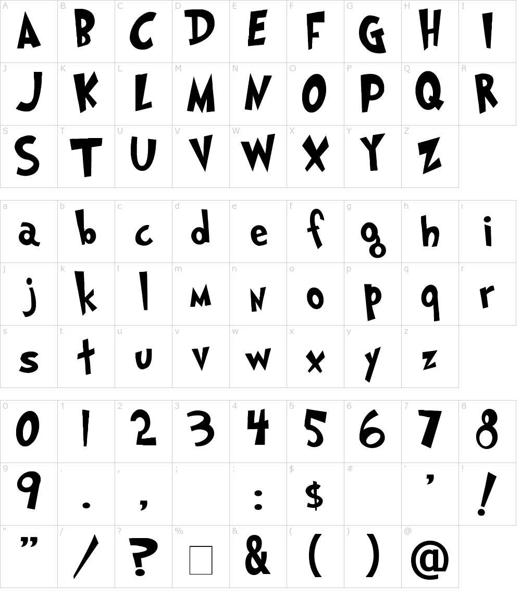

•Tipografías•
En general, la tipografía a usar dependerá será la que tenga por defecto cada navegador, ya que la tipografía en sí no es tan importante como el tamaño
de la misma. Se priorizará el uso de tipografías simples y fácilmente legibles, tanto con serifa como sin serifa, para facilitar así la lectura por parte de
niños y personas mayores.
Aun así, se utilizarán tipografías decorativas de forma puntual, por ejemplo, para títulos de páginas, anuncios de nuevos
juguetes, títulos de promociones u ofertas, etc.
Bubblegum Sans -/-/-/-/-/-/-/-/-/-/-/-/-/- Grinched
 